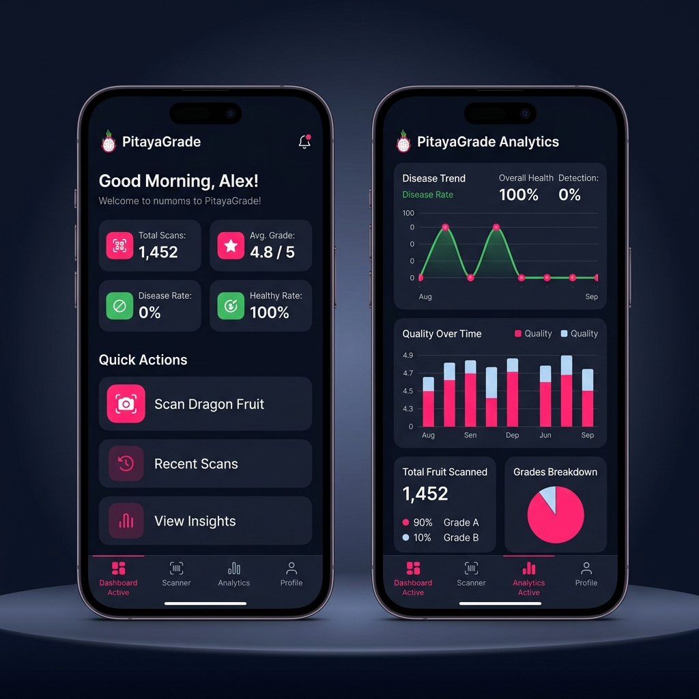
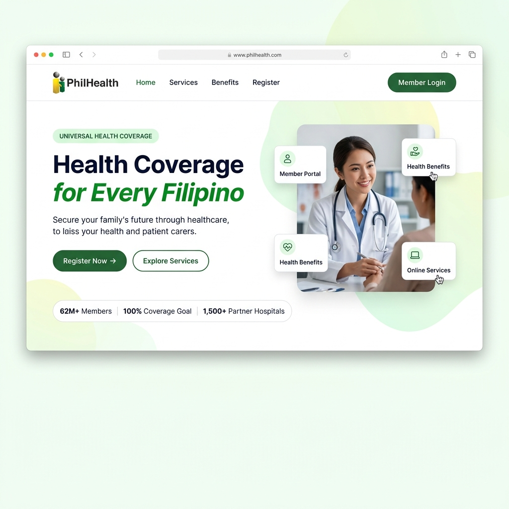
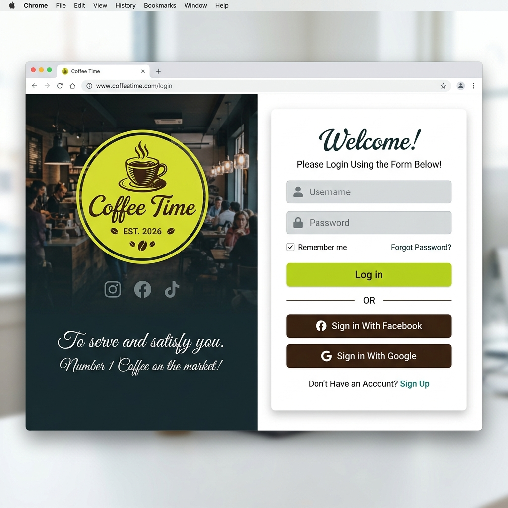

Technical skills
Web development, software development, database design and management, systems analysis, and information systems.
PERSONAL CURRICULUM VITAE / 2026
Web development · Automation · Digital experiences
I’m Irl Crishreg Peña, a 4th-year BSIT student passionate about technology, automation, and digital solutions that solve real-world problems.
Good digital experiences make complex things feel simple.
I’m a 4th-year Bachelor of Science in Information Technology student at Davao del Norte State College. My interests span software development, database management, web technologies, artificial intelligence, and automation. I enjoy improving processes and creating useful digital experiences.
To grow as an IT professional by contributing to internships, collaborative projects, and digital solutions that improve efficiency and create value for businesses and communities.
Technical foundations, practical tools,
and a commitment to continuous learning.
Web development, software development, database design and management, systems analysis, and information systems.
Workflow automation, AI-powered tools, process optimization, and digital productivity.
Problem solving, critical thinking, research and analysis, teamwork, communication, and continuous learning.
Selected academic and personal work in business systems, AI-assisted applications, and interface design.
01 / WEB APPLICATION
Role: Full project development
A business automation dashboard for managing leads, email and SMS campaigns, workflow automations, point-of-sale inventory, recovery funnels, and AI-powered insights.
View live site ↗
02 / AI-POWERED MOBILE APPLICATION
Role: Full project development
An AI-powered mobile application for grading dragon fruit quality, with scan-based grading, disease detection, farm analytics, harvest readiness tracking, and quality trend reports.

03 / UI / UX DESIGN
A landing page redesign concept focused on clarity, trust, accessible services, and a responsive experience for Filipino members.
View Figma design ↗
04 / UI / UX DESIGN
A split-panel login interface for a coffee brand concept, combining brand atmosphere with a clear sign-in form and prominent call to action.
View Figma design ↗EDUCATION
Bachelor of Science in Information Technology · 4th Year
Areas of study: software development, database management systems, systems analysis and design, web development, networking fundamentals, information systems, emerging technologies, and human-computer interaction.
FREELANCE EXPERIENCE
Freelance
Creating web interfaces and exploring practical automation solutions, with a focus on clear design, useful functionality, and simpler digital workflows.
ACADEMIC & PERSONAL PROJECTS
I developed NaviFlow and PitayaGrade in full. My selected work also includes interface designs for PhilHealth and Coffee Time.
My interests include artificial intelligence, business automation, software engineering, digital transformation, and technology innovation.
05 / NEXT CHAPTER
I’m open to conversations about technology, internships, collaborative projects, and professional growth.
Back to top ↑